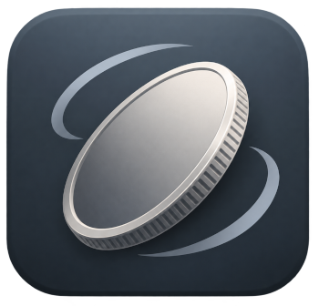

Dependency-free 360 viewer. The poster is the only request until someone turns the picture.
From an options object. Drag, or use the arrow keys.
From markup already on the page. start() binds it.
import { coinspin, start } from 'coinspin';
coinspin('#case', {
folder: 'frames/',
filename: 'coin-{index}.jpg',
amount: 12,
reverse: true,
bottomCircle: true,
poster: 'frames/coin-1.jpg',
label: 'Spin the coin',
});
start();MIT licensed. v0.1.0 · peternickol/coinspin